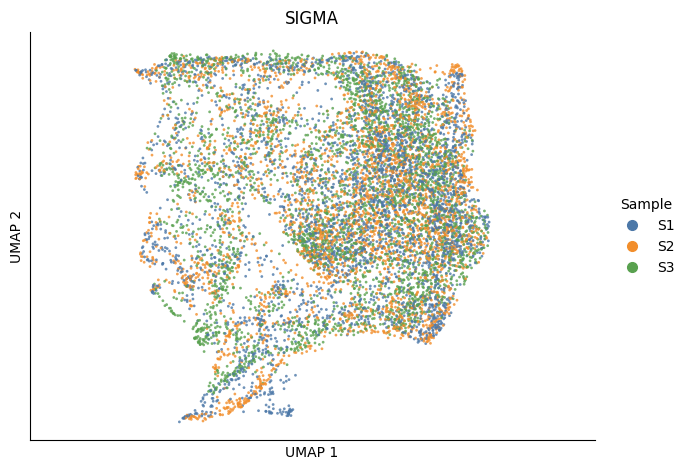
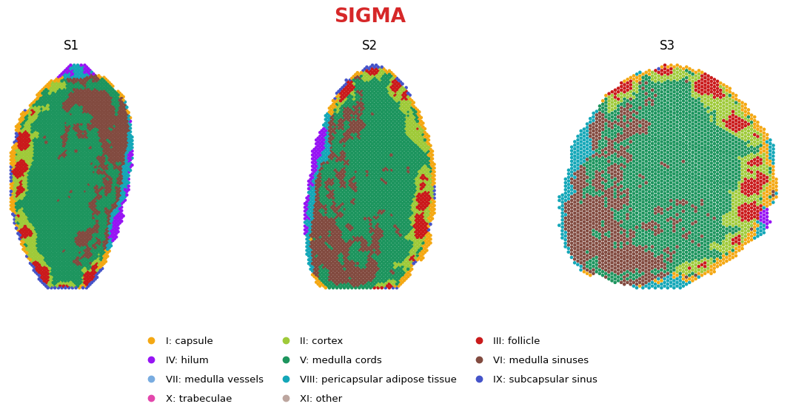

Note
These outputs were regenerated from the selected SIGMA.1025 panel results. The default notebook run reproduces figures from the included saved-result inputs. Full training requires separate raw inputs. Download the complete example bundle from Examples to preserve relative paths.
Human lymph node
SIGMA.1025 • 10,251 spots • 8 occupied native clusters.
This notebook reproduces the selected panel result with integration = 950, contrastive = 0.35, mix = 0.3. The default run uses the included saved representation and spatial labels; it does not retrain the model. To run preprocessing and training on your own copy of the input data, set RUN_TRAINING = True and provide the files listed in the installation guide. The visualization cells deliberately retain the selected panel result so that a new training run cannot silently replace the
reference figure.
The selected model requested 10 components and retained 8 occupied clusters. Anatomical names are the panel’s display correspondence; no reclustering or merging is performed here.
Setup
[1]:
from pathlib import Path
import hashlib
import json
import numpy as np
import matplotlib.pyplot as plt
from matplotlib.lines import Line2D
import sigma
from sigma import run
RUN_TRAINING = False
asset_dir = Path('../assets/lymph')
output_dir = Path('../../results/lymph_training')
config = {
'preset': 'lymph',
'data_root': '../../data/lymph',
'output': str(output_dir),
'integ': 950,
'contrastive': 0.35,
'device': 'cpu',
}
print('SIGMA', sigma.__version__)
print('Mode:', 'training + reference visualization' if RUN_TRAINING else 'saved-panel visualization')
SIGMA 0.3.0
Mode: saved-panel visualization
Preprocessing
[2]:
if RUN_TRAINING:
run(config, prepare_only=True, resume=True,
log_file=output_dir / 'preprocessing.log')
print('Prepared inputs:', output_dir.as_posix())
else:
print('Using included saved-panel inputs:', asset_dir.as_posix())
Using included saved-panel inputs: ../assets/lymph
Training
[3]:
if RUN_TRAINING:
run(config, resume=True, log_file=output_dir / 'training.log')
print('New training outputs:', output_dir.as_posix())
else:
print('Training skipped. Figures below reproduce the selected saved trial.')
Training skipped. Figures below reproduce the selected saved trial.
Load the selected result
[4]:
metadata = json.loads((asset_dir / 'metadata.json').read_text())
result_file = asset_dir / 'results.npz'
assert hashlib.sha256(result_file.read_bytes()).hexdigest() == metadata['results_sha256']
with np.load(result_file, allow_pickle=False) as saved:
result = {key: saved[key] for key in saved.files}
assert len(set(result['obs_ids'])) == metadata['n_spots']
assert np.isfinite(result['embedding']).all()
assert np.isfinite(result['spatial']).all()
assert len(set(result['native_clusters'])) == metadata['n_native_clusters']
for native, display in metadata['color_mapping'].items():
assert np.all(result['display_labels'][result['native_clusters'] == native] == display)
expected_colors = np.asarray([metadata['palette'][x] for x in result['display_labels']])
np.testing.assert_array_equal(result['colors'], expected_colors)
print(metadata['trial'])
print(f"Verified {metadata['n_spots']:,} spots and {metadata['n_native_clusters']} native clusters.")
integ_950__contrastive_0p35__mix_0p3
Verified 10,251 spots and 8 native clusters.
Batch-colored UMAP
[5]:
if 'umap' in result:
umap_xy = result['umap'] # Exact coordinates used in the Simulation panel.
else:
import warnings
from tqdm import TqdmWarning
with warnings.catch_warnings():
warnings.filterwarnings('ignore', message='IProgress not found.*', category=TqdmWarning)
from umap import UMAP
umap_xy = UMAP(n_neighbors=15, min_dist=0.5, metric='euclidean',
random_state=1234, n_jobs=1).fit_transform(result['embedding'])
assert np.isfinite(umap_xy).all()
plt.rcParams.update({'font.family': 'DejaVu Sans', 'pdf.fonttype': 42,
'svg.fonttype': 'none', 'figure.facecolor': 'white'})
samples = metadata['sample_order']
sample_colors = ['#4C78A8', '#F28E2B', '#59A14F', '#E15759', '#B279A2', '#76B7B2', '#EDC948']
batch_palette = dict(zip(samples, sample_colors))
order = np.random.default_rng(0).permutation(len(umap_xy))
fig, ax = plt.subplots(figsize=(7.0, 4.8))
ax.scatter(*umap_xy[order].T, s=4, alpha=0.8, linewidths=0,
c=[batch_palette[x] for x in result['samples'][order]], rasterized=True)
ax.set_aspect('equal', adjustable='datalim')
ax.set(xlabel='UMAP 1', ylabel='UMAP 2', title='SIGMA')
ax.set_xticks([]); ax.set_yticks([])
ax.spines[['top', 'right']].set_visible(False)
handles = [Line2D([], [], linestyle='', marker='o', color=batch_palette[s],
label=t, markersize=7) for s,t in zip(samples,metadata['sample_titles'])]
ax.legend(handles=handles, title='Sample', frameon=False, loc='center left', bbox_to_anchor=(1.02,0.5))
fig.tight_layout()
figure_dir = Path('../../results') / (metadata['preset'] + '_panel') / 'figures'
figure_dir.mkdir(parents=True, exist_ok=True)
fig.savefig(figure_dir / 'batch_umap.pdf', bbox_inches='tight')
fig.savefig(figure_dir / 'batch_umap.png', dpi=180, bbox_inches='tight')
plt.show()

Spatial domains
[6]:
# Use the exact panel coordinates and per-spot colors; retain the native partition.
n = len(samples)
if n == 7:
width, height, legend_columns, bottom = 21.0, 4.7, 5, 0.28
elif n == 3:
width, height, legend_columns, bottom = 12.4, 5.8, 3, 0.31
if metadata['preset'] == 'simulation':
height, legend_columns, bottom = 4.8, 5, 0.14
else:
width, height, legend_columns, bottom = 6.8, 6.4, 7, 0.18
fig, axes = plt.subplots(1, n, figsize=(width,height), squeeze=False)
fig.subplots_adjust(left=0.025, right=0.975, top=0.86, bottom=bottom, wspace=0.08)
fig.suptitle('SIGMA', fontsize=19, fontweight='bold', color='#D62728', y=0.98)
for ax, sample, title in zip(axes[0], samples, metadata['sample_titles']):
mask = result['samples'] == sample
xy = result['spatial'][mask]
# Scale points with map width while preserving the panel's circular/square texture.
size = 18 if n == 7 else (11 if n == 3 else 14)
if metadata['preset'] == 'simulation':
size = 38
ax.scatter(*xy.T, c=result['colors'][mask], s=size, marker=metadata['marker'],
linewidths=0, edgecolors='none', rasterized=True)
if metadata['preset'] == 'simulation':
dx,dy = [np.min(np.diff(np.unique(xy[:,i]))) for i in (0,1)]
ax.set_xlim(xy[:,0].min()-.52*dx, xy[:,0].max()+.52*dx)
ax.set_ylim(xy[:,1].min()-.52*dy, xy[:,1].max()+.52*dy)
else:
ax.margins(0.03)
if metadata['invert_y']:
ax.invert_yaxis()
ax.set_aspect('equal', adjustable='box')
display_title = f'Section {samples.index(sample)+1}' if n == 7 else title
ax.set_title(display_title, fontsize=12, pad=9)
ax.axis('off')
legend = metadata['legend']
handles = [Line2D([], [], linestyle='', marker='o', color=x['color'],
markersize=6, label=x['label']) for x in legend]
# Matplotlib fills legend columns first; reorder handles to read left-to-right.
indices = [i for col in range(legend_columns) for i in range(col,len(handles),legend_columns)]
fig.legend(handles=[handles[i] for i in indices], ncol=legend_columns,
loc='lower center', bbox_to_anchor=(0.5,0.035), frameon=False,
fontsize=9.5, columnspacing=1.3, handletextpad=0.45, labelspacing=1.0)
fig.savefig(figure_dir / 'spatial_domains.pdf', bbox_inches='tight')
fig.savefig(figure_dir / 'spatial_domains.png', dpi=180, bbox_inches='tight')
plt.show()

Provenance
The accompanying metadata.json records the exact panel path, trial path, input checksums, color correspondence and native cluster count. The unchanged trial_metrics.json records the original run; its runtime and metrics are archival measurements, not measurements from this notebook execution.
These inputs support plot reproduction without access to the raw count matrices. Full model reruns require the original input files and preprocessing provenance. See the Reproducibility page for tested environments, model smoke tests and remaining submission requirements.